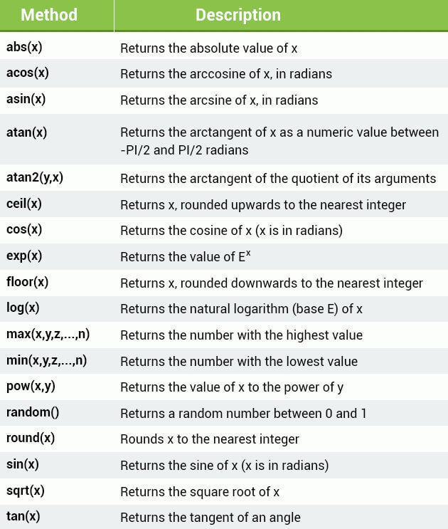

这篇文章上次修改于 671 天前，可能其部分内容已经发生变化，如有疑问可询问作者。
下面介绍一些 JavaScript 内部定义好的 obect，可以直接使用。
JavaScript Arrays 数组
当你需要定义三个课程名称时，需要分别定义：
var course1 ="HTML";
var course2 ="CSS";
var course3 ="JS"; 当你有 100 个课程名称呢？这时候可以使用 Array：
var courses = new Array("HTML", "CSS", "JS");以上定义了一个数组 courses，存储了 3 个元素。
可以使用 index 索引号内访问数组元素，索引号 0 表示第一个元素：
var courses = new Array("HTML", "CSS", "JS");
var course = courses[0];
courses[1] = "c++";以上示例表示：给变量 course 赋值数组第一个元素，给第二个元素赋值 c++。
如果尝试访问超出数组元素的索引，会返回 undefined。
在定义数组时也可以只申明数组元素个数，后续再给元素赋值：
var courses = new Array(3);
courses[0] = "HTML";
courses[1] = "CSS";
courses[2] = "JS";array 数组是一种特殊的 object，它使用 index number 来访问元素，而标准 object 使用 property name 来访问元素，name 是字符形式。
如下是 array 和 object 的元素定义区别：
var arr = {
0: 0,
1: 1,
2: 2,
3: 3
}
var obj = {
'0': 0,
'1': 1,
'2': 2,
'3': 3
}在 array 的 index 数字索引永远是按顺序排列的。所以我们访问以上示例中 arr 和 obj 元素的方式为：arr[0], obj['0']。
JavaScript array 是动态的，也就是你可以在创建时不传入任何参数给构造器：
var courses = new Array();
courses[0] = "HTML";
courses[1] = "CSS";
courses[2] = "JS";
courses[3] = "C++";你可以添加任意多个元素给数组。
为了定义更加方便，可以使用 array literal 语法来创建数组：
var courses = ["HTML", "CSS", "JS"];以上语法和使用 new 关键词创建的数组是一样的。推荐使用这种语法。
JavaScript array 内建了很多实用的 properties 和 method。
length property 返回数组的元素个数：
var courses = ["HTML", "CSS", "JS"];
document.write(courses.length);length 的返回值比最后一个元素的索引号大 1，如果数组为空，则返回值为 0。
concat method 可以叠加两个数组并返回为一个新的数组：
var c1 = ["HTML", "CSS", "JS"];
var c2 = ["C++"];
var newC = c1.concat(c2);newC 数组拥有四个元素："HTML", "CSS", "JS", "C++"。注意使用 concat() method 并不会影响 c1 和 c2。
map method 可以给数组每个元素调用一个 function 然后返回修改后的数据为一个新数组：
var arr = [1, 2, 3, 4];
var newArr = arr.map(function(i) {
return i * 2;
})
console.log(newArr);
//output:
//0: 2
//1: 4
//2: 6
//3: 8
//length: 4reduce Method 可以将数组元素合并为一个 value。语法为：
array.reduce(function(total, currentValue))
total 为元素合并的累积值，currentValue 为当前循环处理到的元素。调用 reduce 时，第一次传入 total 为 第一个元素数据，currentValue 为数组第二个元素，function 会返回一个结果作为第二次循环 total 的数据，currentValue 指向第三个元素，然后进行循环调用 function 累积 total 的值，最后返回 total。
下面举例说明：
var arr = [1, 3 ,5];
var sum = arr.reduce(function(total, curr) {
return total + curr;
});
console.log(sum);
//output:
//9filter method 可以逐个过滤数组的元素，返回符合条件元素创建一个新数组。语法如下：
array.filter(function(currentValue))
filter 将数组元素逐个作为传入参数调用 function，function 返回值为 Boolean 类型，如果为 true 则返回当前数组元素，反之则丢弃当前数组元素。
示例如下：
var arr = [1, 4, 6, 3, 8];
var newArr = arr.filter(function(i) {
return i < 5;
});
console.log(newArr);
//OUTPUT:
//0: 1
//1: 4
//2: 3
//length: 3join method 将数组所有元素转换为一个字符串并返回这个字符串。下面是一个示例：
var arr = ['a', 'b', 'c'];
var x = arr.join();
console.log(x);
//output:
//a,b,c元素间会通过一个分隔符隔开，默认是一个逗号,，可以通过 join 的参数自定义分隔符：
var arr = ['a', 'b', 'c'];
var x = arr.join('/');
console.log(x);
//output:
//a/b/cindexOf method 搜索一个数组中特定的元素，并返回这个元素所在 index 索引。语法如下：
array.indexOf(item, start)
item 是搜索的元素，start 定义开始搜索的位置，默认为 0。
示例如下：
var arr = ['a', 'b', 'c', 'a', 'e', 'b'];
var x = arr.indexOf('b');
var y = arr.indexOf('b', 2);
var z = arr.indexOf('f');
console.log(x);
console.log(y);
console.log(z);
//output:
//1
//5
//-1当搜索的元素不存在时，返回值为 -1。
Associative Arrays 关联型数组
很多编程语言支持给数组添加命名化的 index 索引，也就是给每个元素定义一个名称，但是 JavaScript 不支持这种操作，因为它只能使用内部默认的 index 数字型索引。
但是我们依然可以定义命名化的 index 索引数组，JavaScript 会将其作为一个 object 处理：
var a = [];
a["name"] = "marco";
a["age"] = 20;
document.write(a["age"]);JavaScript 会将 a 作为 object 处理，这样 name 和 age 就是其 properties。可以使用以上写法来读取 property 数据。
由于 a 数组被作为 object 处理，所以标准 array 的一些 method 和 properties 将无法正确执行，例如：a.length 返回值将是 0 而不是 2。
JavaScript 原生并不支持命名化的元素索引，所以推荐当你想要使用 number 数字型 index 时使用 array，当你想要使用命名化的索引时使用 object。
the Math Object 数学对象
the Math Object 可以用来处理数学运算任务，它包含多个 properties：
Math 没有 constructor 构造器，所以使用时并不需要单独创建 object。例如：
document.write(Math.PI);
以上将输出：3.141592653589793
Math object 包含多个 method 用来计算：

下面示例计算 4 的平方根：
var a = Math.sqrt(4);如果想要得到一个 0- 10 的随机数，可以使用下面方法：
Math.ceil(Math.random() * 10);
下面编写一个小程序，让用户输入一个数字然后将这个数字的平方根放在弹窗通知中：
var n = prompt("please input a number: ", "");
var m = Math.sqrt(n);
alert(m);The Date Object 时间对象
setInterval() method 用来在指定的间隔时间(毫秒)下调用 function 或评估一个表达式。它将会持续调用直到执行 clearInterval() 或关闭窗口。
下面的示例将会每三秒钟弹出窗口：
function myAlert() {
alert("hello");
}
setInterval(myAlert, 3000);注意传递 function 时只需要写 function 名称即可，不需要小括号()。
Data object 可以让我们使用时间元素，一个 Date object 由：a year, a month, a day, an hour, a minute, a second, and milliseconds 构成。
使用 new 关键词来创建一个 Date obect，包含有当前的日期和时间：
var d = new Date();
//d stores the current date and time也可以使用指定的日期和时间来创建 Date object：
new Date(milliseconds)
new Date(dateString)
new Date(year, month, day, hours, minutes, seconds, milliseconds)JavaScript 日期计算使用毫秒为单位，起始日期为：01 January, 1970 00:00:00 (UTC)。一天包含 86,400,000 毫秒。
以下示例使用不同方式定义指定日期：
//Fri Jan 02 1970 00:00:00
var d1 = new Date(86400000);
//Fri Jan 02 2015 10:42:00
var d2 = new Date("January 2, 2015 10:42:00");
//Sat Jun 11 1988 11:42:00
var d3 = new Date(88,5,11,11,42,0,0);JavaScript 的月份从 0 到 11，1 月就是 0，12 月就是 11。Date object 是 static 类型的，创建后就不会改变。
Date object 有如下 method 可供使用：
例如读取当前小时数值：
var d = new Date();
document.write(d.getHours());下面示例在窗口显示当前时间，且每秒刷新一次：
function printTime() {
var d = new Date();
var hour = d.getHours();
var min = d.getMinutes();
var sec = d.getSeconds();
document.body.innerHTML = hour + ":" + min + ":" + sec;
}
setInterval(printTime, 1000);innerHTML property 可以设置或返回一个 HTML 元素的内容，这里我们将 document 的 body 块的内容赋值为我们定义的时间数据，并且每秒覆盖更新一次。
没有评论